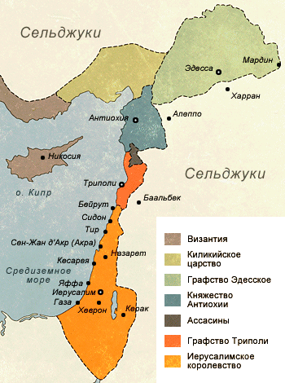
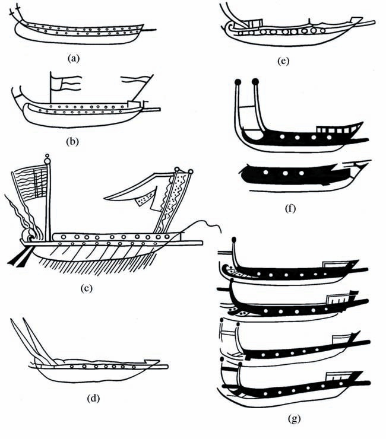

Генуэзский флот и Первый крестовый поход
Блажен, кто в хронике убогой
Узреет некий дивный миф...
И. Г. Эренбург
Эпоху крестовых походов можно характеризовать по-разному, в зависимости от того, под каким углом зрения исследователь смотрит на происходящие тогда события. Нас будет интересовать процесс создания европейских колоний на занимаемых мусульманами в восточном Средиземноморье территориях, которые не имели удобного сухопутного сообщения с Европой и полностью зависели от морских коммуникаций. Те страны, которые обеспечивали эти коммуникации, получали известные преференции, в том числе и в первую очередь, в сфере морской торговли.

Государства крестоносцев на Востоке в 1140 году
В предыдущем рассказе мы установили, что флот Генуи впервые проявил себя как оперативная единица в период Первого крестового похода. Несмотря на то, что в походе приняли участие ряд христианских держав, которые по тем временам имели внушительные корабельные формирования, приходится признать, что наиболее весомый вклад в экспедицию внесли военно-морские силы Византии и Генуи.
О роли византийского флота говорит даже такой недруг Византии, как Раймунд Агильский; он отмечает, что крестоносцы вряд ли смогли бы пережить зиму 1097-98 гг., если бы не поставки продовольствия с византийского Кипра. Это же утверждает и другой хронист, не замеченный в симпатиях к Византии, Рауль Канский.
Раймунд Агильский в своей хронике упоминает также 30 английских кораблей, находившихся на службе у Византии и под византийским командованием, захвативших порты Лаодикею (нынешнюю Латакию) и Сан-Симеон (нынешний Самандаг) еще до прибытия основных сил крестоносцев к Антиохии. Однако судьба этих кораблей неизвестна, в дальнейшем говорится лишь о 9-10 сильно потрепанных английских судах, которые их экипажи покинули и сожгли, чтобы предпринять поход на Иерусалим. Возможно, часть из тех самых тридцати кораблей были суда фламандцев, туманные намеки на участие которых в экспедиции содержатся в хрониках. А может быть все эти корабли принадлежали Византии. По крайней мере, арабский хроникер из Алеппо указывает, что Лаодикею 19 августа 1097 года захватил византийский флот, пришедший с Кипра.
Что касается роли таких морских держав, Как Пиза и Венеция, то она была, если основываться на хрониках той эпохи, весьма незначительна, присутствие пизанских и венецианских кораблей в хрониках упоминается лишь вскользь, без каких либо деталей. Относительно большой флот Пизы, с архиепископом Даимбертом на борту, отплыл на Восток в конце 1098 года, но вместо поддержки крестоносцев начал грабить владения Византии на Корфу, Кефалинии и Самосе. В Сирию пизанцы прибыли лишь летом 1099 году, приняли участие в блокаде Латакии, однако междоусобные интриги заставили пизанцев удалиться. Также и венецианский флот лишь упоминается в описаниях захвата Хайры 20 августа 1100 года, а также спорадически отдельные корабли Венеции отмечаются на маршрутах от Кипра к Сирии.
И лишь для флота Генуи мы имеем подтвержденные во многих источниках твердые цифры и достоверные факты его участия в экспедиции. Наиболее детальное описание участия генуэзцев в крестовых походах приведено, естественно, в хрониках Каффаро ди Рустико да Каскифелоне и его продолжателей (Annales ianuenses), описывающих историю Генуи с 1099 по 1294 год.
Бюст Каффаро. Генуя
Каффаро, известный военный и общественный деятель Генуи, начал свою карьеру, юношей отправившись с генуэзским контингентом в Святую землю в 1100 году, так что все описания в его хронике, в том числе и описания кораблей, сделаны не из пересказов третьих лиц, а по собственным наблюдениям. Да и военно-морского опыта ему было не занимать: Каффаро принял участие в нескольких сражениях в качестве капитана, а в боях с флотом Пизы – даже адмирала генуэзского флота.
Генуэзский флот, который отплыл в 1098 году к берегам Святой земли, состоял из duodecim galeas et sandanum I. – двенадцати галер нового западноевропейского типа (galeae) и одного судна обеспечения, которое Каффаро называет sandanum. Санданум - это не что иное как латинизация греческого термина χελανδίων , хеландий. Мы о нем подробно писали здесь , здесь и здесь.. Что касается генуэзских галер, то первые их изображения мы встречаем в манускрипте хроники Каффаро и его продолжателей, находящемся в Национальной библиотеке Франции. Подробный их анализ мы провели ранее, когда говорили о становлении системы гребли alla sensile.
Приведенное у Каффаро описание экспедиции генуэзской эскадры в Левант дает нам исключительно важную информацию о скорости перемещения достаточно крупных отрядов кораблей в конце XI века. Эскадра вышла из Генуи в середине июля 1097 года и прибыла в порт St. Symeon в Леванте около 20 ноября того же года. (Отряды пизанских и венецианских галер даже не пытались совершить такой переход за один сезон: корабли отправлялись осенью 1098 и 1099 годов соответственно, зимовали на Ионических островах и на Родосе и добирались до Леванта осенью 1099 и весной 1100 года соответственно.) Генуэзцы прошли расстояние более 1911 морских миль (3540 км) за четыре с небольшим месяца. Таким образом, средняя скорость движения эскадры составила около 0,65 узла. При этом, конечно, следует учитывать, что на маршруте путешествия не было заметных противных течений и переход осуществлялся в тот период года, когда дули благоприятные ветры, так что можно было идти и на веслах, и под парусами. Следует особо отметить, что такое длительное путешествие, предпринятое при большом удалении от родных баз и без организации предварительного тылового обеспечения вдоль маршрута движения было предпринято впервые. Когда Велисарий в 533 году предпринял поход из Константинополя к королевству вандалов Африке (мы описали это путешествие ранее), то на всем протяжении своего маршрута вплоть до Ионических островов следовал вдоль византийских берегов. На дальнейшей части маршрута он пользовался гостеприимством регентши Королевства остготов Амаласунты. За все время морских войн между мусульманами и христианами флоты всегда придерживались берега своей страны, прежде чем совершить короткий переход к цели своей экспедиции и атаковать противника. Византийцы ни разу не предпринимали попыток захвата Крита непосредственно из Константинополя. Они всегда доставляли свои войска сухопутным путем к заранее оборудованному пункту сбора (ἄπληκτον, aplēkton), укрепленному лагерю на юго-западном берегу Малой Азии, откуда коротким броском высаживались на Крит.
Такая тактика объяснялась просто: большое количество людей на борту галер требовало больших запасов продовольствия, и в первую очередь воды. Даже новый западноевропейских тип галер (galea), которым был оснащен генуэзский флот, на котором, в отличие от византийских дромонов, не было второго яруса гребцов под палубой и это значительно увеличивало емкость трюма для корабельных запасов, не мог продержаться в море дольше пяти дней. Заправка же емкостей водой, особенно если при этом пользовались родниками или скважинами, требовала длительного времени: для экипажа легкой генуэзской галеры требовалось от 4 до 8 тонн воды (это тот максимум, который диктовался небольшим водоизмещением такого корабля).
В дополнение к информации из наших прошлых записей, на которые мы сослались выше, приведем еще несколько соображений о конструкции первых генуэских галер. Для удобства воспроизведем иллюстрацию из старого поста.

Галеры Генуи из хроники Каффаро и его продолжателей
Мы можем заключить, что длина этих галер была значительно больше их ширины, это были длинные корабли. В носовой части они имели уже шпирон, а не таран, как на прежних гребных военных кораблях. В самом начале эволюции генуэзских галер они представляли во многом копию византийского дромона, т.е. были биремами с двумя рядами гребцов, расположенными один над другим. Однако очень скоро гребцы стали располагаться в один ярус, по два человека на банке, каждый из которых греб своим индивидуальным веслом (система гребли alla sensile). Весла гребцов не проходили через отверстия в корпусе (гребные порты), а крепились к уключинам на верхней кромке борта, или, позже, на балках гребного ящика, апостиса, вынесенных за пределы корпуса. Генуэзские галеры той поры несли одну мачту с латинским парусом. Вторая мачта появилась лишь в тринадцатом веке, и лишь к концу тринадцатого – в первой половине четырнадцатого века появился третий гребец на банке и галеры приняли свой классический вид, известный под названием galee sottili. Понятно, что это только схематический набросок эволюции генуэзской галеры, точной хронологии всех этапов этой эволюции при нынешних наших знаниях мы привести пока не можем.
Продолжим в следующий раз.